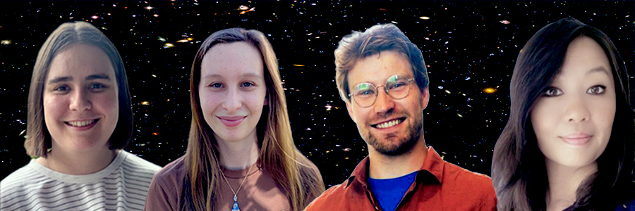

Public talks
18–20 May 2026 · BrewDog Fortitude Valley, Brisbane
QUASAR researchers take to the stage at Pint of Science 2026
Four QUASAR researchers will be among the speakers at Pint of Science Brisbane 2026, presenting talks across the festival's three nights at BrewDog Fortitude Valley on topics spanning cosmic distances, supermassive black holes, gravitational waves, and the search for dark matter.
Pint of Science is an international festival that brings researchers into local pubs to share their latest work over a drink. Started in the UK in 2013, it now runs every May in more than two dozen countries. The Australian 2026 edition takes place over three nights from 18 to 20 May, with each evening built around a different theme and a relaxed Q&A format that needs no science background.
It's a strong showing for the collaboration, with researchers from both UQ and QUT taking part each night. Together they bring some of the biggest open questions in astrophysics into one of the most accessible formats possible: a relaxed conversation over a drink.
The QUASAR line-up
All four QUASAR talks are at BrewDog Fortitude Valley, with doors from 6:00 pm and talks running 6:30–8:30 pm. Each evening is ticketed separately at $15 via the official Pint of Science Australia event pages.
Monday 18 May
Caitlin Ross (University of Queensland)
“What to do when you can't find a big enough ruler?”
The Universe doesn't come with a measuring tape, so how do astronomers work out how far things really are? Caitlin explores how light, motion, and geometry are used to measure cosmic scales, and how the same ideas work much closer to home.
Tuesday 19 May
Vanessa Porchet (Queensland University of Technology)
“Disentangling Galaxy Light: A Messy Galaxy–Supermassive Black Hole Relationship”
Most galaxies host a central supermassive black hole, but the processes driving their co-evolution remain poorly constrained. Vanessa shows how multiwavelength observations can isolate the imprint of black-hole activity and reveal how it shapes star formation across cosmic time.
Wednesday 20 May
Hugh McDougall (University of Queensland)
“Extragalactic Black Holes: Echoes and Ripples to Hear the Age of the Universe”
Just over a decade ago we first heard the ripples of two black holes colliding. Hugh explains how LIGO, the most precise device in human history, lets us listen in on distant black-hole mergers, and how that gravitational-wave astronomy is rewriting our understanding of the universe's history.
Narise Williams (University of Queensland)
“How to directly detect dark matter”
Dark matter is estimated to make up around 85% of all the matter in the universe, yet it has never been directly observed. Narise walks through how hundreds of experiments around the world are racing to be the first to catch it, and how new atomic-physics techniques could finally tip the odds.
Event details
- Venue
- BrewDog Fortitude Valley, 235 Brunswick St, Fortitude Valley, Brisbane QLD 4006
- Dates
- Monday 18 to Wednesday 20 May 2026
- Times
- Doors 6:00 pm · talks 6:30–8:30 pm each night
- Tickets
- $15 standard per night, via the festival pages linked above
- Audience
- All welcome (no science background required)